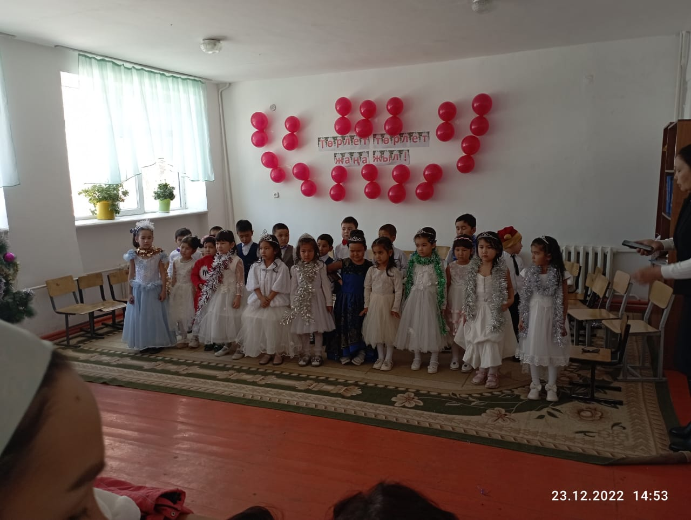
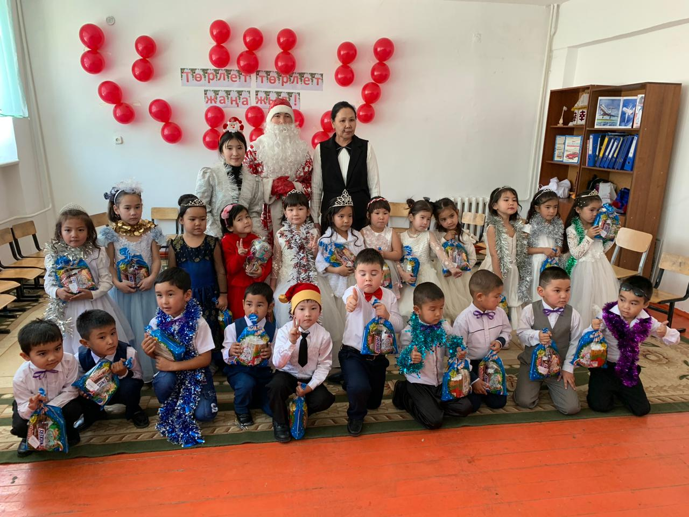

Төрлет,төрлет жаңа жыл!
Балалар әуенмен
ішке кіреді
Тәрбиеші: Қандай жақсы шыршамыз,
Ән шырқайық, баршамыз.
Тақпақ айтып, би билеп,
Жаңа жылды бастайық
Құрметті бүлдіршіндер, ата - аналар, ұстаздар.
Көптен күткен қуанышты мереке жаңа жыл келе жатыр. Келе жатқан жаңа жыл құтты
болсын. Барлығымызға бақыт, береке, көп қуаныштар, жақсылықтар әкелсін! Жәнеде
осы жаңа жылға арналған бүгінгі ертеңгілігімізді ашық деп жариялаймыз. Біздің
бүлдіршіндеріміздің жаңа жылға шашуы ретінде «Жаңа жыл» әні
Тәрбиеші: Балалар,
ортамыздағы әсем не?
Балалар: Шырша!
Тәрбиеші: Шыршамыз қандай әдемі! Ойыншықтары
неткен көп! Ал, кім бізге шыршаға арналған тақпақтарын айтып береді екен?
Айхан:
Жап жасыл шыршамыз,
Қандай тамаша.
Басында жұлдызы,
Қонады жараса.
Әмина:
Ойнаймыз тойлаймыз,
Біздің бақшада.
Ойыншықтар көп екен
Әсем шыршада.
Нұрсезім:
Жасыл шырша орманнан,
Бізге арнайы келіпті.
Ойыншығын балалар,
Шыршаға әсем іліпті.
Хадиша:
Әсем шырша сәнденген,
Өз аңдарын күтеді.
Жаңа жылмен бірге біз,
Орманға кеп жетеді.
Талшын:
Тамаша, тамаша,
Шыршамыз тұр жараса.
Басында әсем жұлдызы,
Көз тоймайды қараса.ла» .
Тәрбиеші:
Жарайсыңдар, балалар! Өте жақсы айттыңдар. Музыка әуенімен залға секеңдеп қоян
кіреді.
Абдуқадір: Ой, балалар, балалар, сүйінші,
сүйінші!
Ау, жарандар, ал қараңдар
Жауып тұр қар себелеп.
Көкке толды, жерге қонды
Сансыз аппақ көбелек.
Тым алыстан, Марстан
Келіп Аяз атамыз
Жылды тойлап,
Билеп - ойнап,
Көп қызыққа батамыз!
Секіріп билеп жүрген қоянның алдынан аю шығады.
Қоян сасқалақтап қалады.
Қоян: Амансыз ба, аю паң!
Аю: Жаңа жылдың алдында
Тойды еске алдым да
Ұйқымды ашып, сергідім
Ұйықтамаймын мен бүгін!
Жылды қарсы алайық
Би билеп, ән салайық.
Қоян: Мына бүлдіршіндердің де жаңа жылға
дайындаған биін тамашалап, бірге билейік.
Екеуі қол ұстасып, билейді.
Би: «Қар ұлпалары»
Сол кезде қуана қутыңдап түлкі келеді.
Түлкі:
Қоянжанға бір сәлем!
Аю паңға мың сәлем!
Аю, қоян: Аман ба, түлкі, кел мұнда!
Түлкі:
Достарым, жыл келеді
Сыйлығын ол береді
Жұмбақ шешкіш түлкінің
Өнерін жұрт көреді
Тауып өз сыңарымды
Тайсалмай, биге түciп,
Тарқатам құмарымды .
Аю: Рахмет, Түлкіжан
Жүрген жерің күлкілі ән!
Енді бәріміз ән айтып жіберсек қалай болады?
Ән: «Балдырғандар»
Тәрбиеші: Жарайсыңдар, балалар! Балалар мен сендерге жұмбақ жасырайын.
Соны шешесіңдер ме?
Балалар: Иә.
Жұмбақ:
Ақсақалды шал жылына
Бip - ақ рет келіп кетеді
Қызы мен ұлына
Сыйлық алып келеді
/Аяз Ата/
Тәрбиеші: Балалар, енді жаңа жылдық мерекемізге Аяз атаны шақырайық. Ол орманда жүріп
адасып кеткен болар.
Балалар: Аяз Ата! Аяз Ата! - деп айғайлап шақырады.
Аязата: Сәлеметсіңдер ме, балалар!
Күнтізбеде қалыпты жалғыз ғана бір парақ,
Дайындалдым жыл бойы,
Жолға шығар келді уақ!
Шақырымды жүздеген
Басып өту мен үшін
Жаңа жылдың түнінде
Жасыл шырша түбінде.
Кездессем деп сендермен,
Тарасам екен сыйлықтар,
Одан асқан не сый бар.
Қуаныш сыйлау балаға
Одан зор бақыт бола ма!
Сендерді көргеніме сондай бақыттымын!
Балалар, мына шыршамыз көңілсіз тұрған сияқты ғой. Кәне, сиқырлы сөздерімізбен оның
шамдарын жарқыратайық!
Қуант бізді, таңырқат шамдарыңды жарқырат! (3 рет айту керек)
Балалар: Қуант бізді, таңырқат шамдарыңды жарқырат.(қолдарын шапалақтатады) Шырша
жарқырайды.
Аязата: Балалар, менің қарша қызым қайда жүр екен, кім тауып береді екен маған?
Абдуқадір:
Мұздан моншақ тағынып,
Күміс қырау жамылып.
Ортада тұр Ақшақар,
Көптен күтіп сағынып.
Дарын:
Кел билейік сенімен,
Деймін тартып жеңінен
Еріп кетпе Ақшақар.
Адамдардың демімен.
ӘН: Шырша жыры
Ақжүрек:
Міне тағы келіп тұр,
Жаңа бір жыл балалар.
Жадыратып жер үстін
Төрімізге ол шыққан.
Айтөре:
Аспан жерге төгеді,
Ақ күмісін уыстап,
Жаңа жылда келеді
Бізге қарай жылыстап.
Айсұлтан:
Жүзімізге күлкі ойнап
Қанаттанды жанымыз.
Жаңа жылды біз тойлап
Шаттанамыз бәріміз.
Би: Ұлдар биі
Аязата: Бәрекелді, бәрекелді. Менің Ақшақарым қазір келіп қалар, осындай тақпақтар дан кейін
кідірмес.
Тәрбиеші: Аязата, мен де, жұмбақтап жіберсем қайтеді?
Ертегідей орманнан
Көктей өтіп келеді.
Сұңқар бойлы бір сұлу
Табыңдаршы, аты кім?
Балалар: Ақшақар! (музыкамен Ақшақар кіреді)
Ақшақар: Сәлеметсіңдер ме, балалар! Орманды көктей өтіп жеттім - ау сендерге. Қандай әдемі,
неткен сұлу шырша! Мен білемін бір ойын:
Үйретейін сендерге
Мен бастайын, ал, сендер аяқтаңдар ойынды. Хормен жауап айтыңдар! Қарға мүлгіп дала тұр, келе
жатыр....
Балалар: Жаңа жыл!
Ақшақар: Қызыл мұрын, ақ мұртты білсең атын тез ата, келеді бізге.....
Балалар: Аязата!
Ақшақар: Шырша бүгін кәделі! Сендер әрі....
Балалар: Әдемі!
Ақшақар: Көңілсіз бір бала жоқ, ойын – күлкі таралсын.
Құтты болсын....
Балалар: Жаңа жыл! (3 рет)
Жаңа жыл келеді.
Жаңа жыл: Кім десеңдер, мен жаңа жылмын, Қоянмын.. Мен әкелген жаңа жыл сендерге үлкен
табыс, денсаулық ала келдім.
Аязата: Бәрекелді, ал, енді балалардың бізге дайындаған өнерін тамашалайық. «Қуыршақ биі».
Арсен:
Бізді байтақ далада,
Асқар тауда қалада.
Биыл ғажап іс болды,
Таң ғажайып қыс болды.
Зере:
Жаңа жылмен, жаңа жылмен,
Құттықтаймыз әрине.
Әкемізді, анамызды
Қонақтардың бәрін де!
Мансур:
Бір топ бала сырғанап,
Би билейік зырлайық.
Қалды артта қар алып,
Іздерінен қар ұшып.
Нұрилла:
Кел жаңа жыл біздерге,
Кел жаңа жыл, жаңа жыл.
Қызыл ала шапаны,
Сағындым Аязатаны.
Нұрқуат:
Далада қар борайды,
Ақ мамыққа орайды.
Нұрислам:
Мұз болады қатады,
Жап - жалтар боп жатады.
Аруна:
Қыс келді, Қыс келді.
Ақтарып ақ қарды.
Әлия:
Қызыл ала шапаны
Сағындым Аязатаны.
Тәрбиеші: Кәне, балалар, бәріміз «Жаңа жыл!» әнін жақсылап айтып жіберейік, Аязатамызбен
Ақшақарымызбен, Жаңа жыл бар, бәріміз бірге!
Тәрбиеші: Жаңа жылға арналған «Жаңа жыл» биі.
Ақшақар: Мінекей, балалар, сендермен қоштасатын да кез келді.
Сендерді қимай тұрмыз, барлығың да көңілді, әдемі бала екенсіңдер.
Аязата:
Жаңа жылда, балалар, тек қуаныш көріңдер.
Ауырмаңдар ешқашан, мықты болу өзіңнен.
Менің сендерге арнап әкелген сыйлықтарыңды апайларыңа тапсырдым. Сыныптан аласыңдар.
Ақшақар:
Жаңа жылда, балалар, тек жақсылық көріңдер.
Сау болыңдар, балалар
